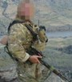
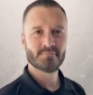
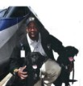
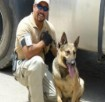

Miriah Allamong is a widely recognized leader in the K-9 security industry whose career spans over 25 years across the full spectrum of security services. She is a certified working K-9 handler and trainer with over 20 years of service in foreign conflict zones, collaborating directly with state and federal law enforcement, intelligence agencies, and special operations teams in the global war on terror.
Miriah made history as the first female military contractor EOD Canine handler, completing 8 combat deployments in Afghanistan and Iraq. Her combat-proven expertise solidified her reputation as one of the most accomplished K-9 professionals in the world. She combines this wealth of experience with an unwavering commitment to professionalism, precision, and reliability.
As founder of Gladiator Allegiance LLC, IAG Protection Group, and the driving force behind ISOK at Legacy Ranch, Miriah has built the most complete K-9 security ecosystem in the United States — from training and certification through deployment and lifelong K-9 care. She is also a partner in The Sapphire Group, providing diplomatic protection for U.S. embassies and dignitaries worldwide.

Marine Corps combat veteran and former U.S. Government PMC with 35 years of service. Multiple deployments in Iraq, Afghanistan, Syria, and Panama. Conducted deep reconnaissance missions, Direct Action Operations, Medical Evacuations, Security Advances, Surveillance, Intelligence Gathering, and Protection of Dignitaries and celebrities. OGA Liaison.

President of the UPWDA. 18 years of police experience including 14 years in K-9 roles. Specialized in special crimes street division and SWAT/HRT. Maryland Police Training Commission Instructor. Lead instructor for 6 in-house K-9 Academies. Gun Detection Dog Program Initiator. Nationally certified K-9 Handler, Detective, and Trainer.

50+ years of K-9 program development. Established pioneering explosive detection programs at major airports. Transformed Amtrak's National Explosives Detection Canine Program. K-9 Commander, Metropolitan Washington Airport Authority. Led U.S. Army's first EOD K-9 team in Operation Desert Shield. Congressional expert witness on national security and perimeter protection.

Leads global K-9 deployment strategy and operational coordination across domestic and international security engagements. Coordinates canine teams across Gladiator Allegiance and IAG partner organizations worldwide — ensuring program standards, handler certification, and operational readiness at every deployment site.
Physician anesthesiologist with expertise in trauma care, high-risk surgery, orthopedics, and perioperative pain management. Extensive non-clinical experience in medical logistics, throughput optimization, technology integration, and workforce efficiency. Dedicated to advancing patient care and supporting counterterrorism and organizational development missions.
Senior advisor for government relations and Faith & Freedom Coalition. Extensive background in investigatory research, lobbying, and political consultation. Native Russian speaker with French proficiency. Maintains strong ties with U.S. government personnel and the Israeli Defense Force. Educates members of Congress on the Israeli-Hamas conflict and counterterrorism strategy.
Allamong, Parker, Baldwin, and Genovese have established a world-class K-9 executive and security management team based on past performances in their respective fields and close relations with legendary K-9 trainers, certifiers, breeders of purpose-bred dogs, and key Tier 1 special operators. The members of the immediate and expanded team — individually and collectively — have managed some of the largest working dog programs ever mobilized, both in the U.S. and in global conflict zones. All ISOK personnel hold Top Secret clearance.